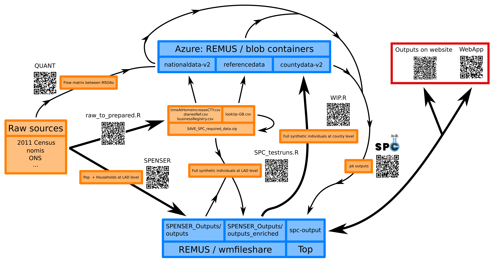

10 Technical overview
SPC is divided into two phases. The data preparation phase relies on scripts that only need to be run once. It is meant to output a postprocessed version of all the raw data sources that allows the model to run smoothly on custom areas. The second phase involves the user choosing a custom area and launching a simulation. It pulls the relevant datasets among the data prepared by the first phase, calculates the different daily activities and formats the results into a single protobuffer file.
We provide in this document a step by step description of running the entire SPC pipeline. For
The full SPC pipeline comprises the following steps.
- Phase 1 - Data preparation steps:
- The SPENSER model creates a synthetic population with basic demographic information for all of GB.
- A script downloads and prepares data from various public sources that will be used throughout the model.
- The outputs of SPENSER are enriched using some of the outputs from step 2.
- The resulting outputs are uploaded as
.csvfiles to a dedicated Azure repository.
- Phase 2 - Steps after the user has selected a study area:
- All the data relevant to the study area are pulled from Azure.
- Individuals are assigned a single education destination (if under 16) and several potential retail destinations, according to a local version of the QUANT model.
- Individuals are assigned a single workplace destination (if above 16), according to the method described here.
- The population, its activities and an optional lockdown modelling are gathered into a single
.pbfile that can be visualised by the SPC explorer.
We now explain how to run each step. The theoretical concepts supporting the modelling are presented here.

10.1 Phase 1: Data preparation
10.1.1 SPENSER
The original SPENSER model is made up of 5 different GitHub repositories, operating specific parts of the simulation of a synthetic population (gathering the data from ONS, creating individuals, creating households, assigning individuals to households and projecting the population to future years). We use this modified version with instructions for running the full pipeline on a single machine.
The SPENSER microsimulation is split into three steps:
- Household synthesis: households are synthesised for a base year (2011) from census data at OA resolution. These households are then sequentially synthesised for subsequent years using household forecasts.
- Population synthesis: people are sequentially synthesised using marginal census data on gender, age and ethnicity at MSOA resolution for 2011, with population projections used to derive the marginals beyond the reference census year.
- Assignment: for a given year, the synthesised population (from step 2) can be assigned to a synthesised household (from step 1), while a “household representative person” from the synthesised population (step 2) is assigned to each synthesised household (from step 1).
The result of SPENSER is two separate datasets and a merging key: one dataset for individuals, accurate at MSOA level and containing the sex, age and ethnicity fields; and one for households, accurate at OA level and containing the OA11CD, HOUSE_nssec8, House_type, HOUSE_typeCommunal, HOUSE_NRooms, HOUSE_centralHeat, HOUSE_tenure and HOUSE_NCars fields respectively.
10.1.2 Downloading and preparation of public data from various sources
Instructions to run this step from the source code can be found under Step 1: Curate public data from diverse sources. The result is a set of data files, some of which will be merged with the outputs from SPENSER during the next step, containing:
- NSSEC8 distributions among the population of England and Wales by age group and sex at MSOA level (
NSSEC8_EW_F_16to24_CLEAN.csv, etc.) and among the total population of Scotland by age group, sex and ethnicity (NSSECS_CLEAN.csv) - A combined extract from the three latest GB Health Surveys (
HSComplete.csv) - An extract from the UK Time Use Survey 2015 (
indivTUS.csv) - A file containing a set of coefficients to estimate the average BMI of individuals in England depending on their age, sex and ethnicity (
BMIdMean.csv) and a file containing coefficients to obtain the equivalent average BMI in Scotland and Wales (BMIdiff.csv) - Coefficients to estimate the hourly salary of an employee in England depending on their home region, sex, part-time/full-time status, age and SOC category (
coefFFT.csv, etc. &ageRescaleFFT.csv, etc.). - Coefficients to estimate the numbers of hours worked corresponding to the criteria mentioned above (
meanHoursFFT.csv, etc. anddistribHours.csv) - Centroid coordinates of Output areas in GB (
OACentroids.csv)
In addition, four files to be used by the second phase of the model are outputted:
diariesRef.csvcontains diaries of typical days extracted from the UK Time Use SurveybusinessRegistry.csvcontains a list of all individual workplaces in GBtimeAtHomeIncreaseCTY.csvcontains a reduction in time spent away from home during the pandemic according to Google Mobility reportslookUp-GB.csvis a comprehensive lookup table between GB geographies, including name variants used by Google and OSM and local file names for storage within Azure
To understand the methods supporting the creation of these files, we refer the reader to the corresponding section inside the modelling methods section.
10.1.3 Enriching SPENSER
Instructions to run this step can be found under Step 2: Add to SPENSER. Line numbers quoted in the following refer to this script.
Once merged into one dataset according to the matching key (l. 13-49), the SPENSER data is enriched with the outputs of the previous step. An individual among those sharing the same 5-year age group (extra details for under 18) and sex is drawn from the participants of the Health Survey (l. 56-72). This adds the id_HS, HEALTH_diabetes, HEALTH_bloodpressure, HEALTH_cvd, HEALTH_NMedecines, HEALTH_selfAssessed and HEALTH_lifeSat fields. This join is not spatially differentiated and other matching criteria (ethnicity and nssec8) were retained due to a lack of representativity inside the survey. The BMI field is then added l. 74-89, according to this method.
Each individual that is not a head of household is assigned an nssec8 category (l. 96-108). This is done according to nssec8 category distributions among the general population by sex and age groups according to ONS data (DC6114EW and DC6206SC datasets). An individual among those sharing the same 5-year age group, sex and nssec8 category is drawn from the participants of the UK Time Use Survey (l. 111-125). This adds the id_TUS_hh, id_TUS_p, pwkstat, soc2010, sic1d2007, sic2d2007, netPayWeekly and workedHoursWeekly fields. Note that the netPayWeekly and workedHoursWeekly fields have a low response rate among participants of the survey. For that reason, we have added a much more detailed modelling of income, that includes spatial differences at region level (l. 130-140).
Coordinates of the OA where the household’s home is located are finally added l. 152-156.
10.1.4 Azure upload
Following enrichment, a final step involves grouping LADs into counties and uploading to an Azure container for use as input for Phase 2 below.
10.2 Phase 2: Running SPC for a specific study area
This part is corresponding to the scripts written in Rust. Instructions can be found here.